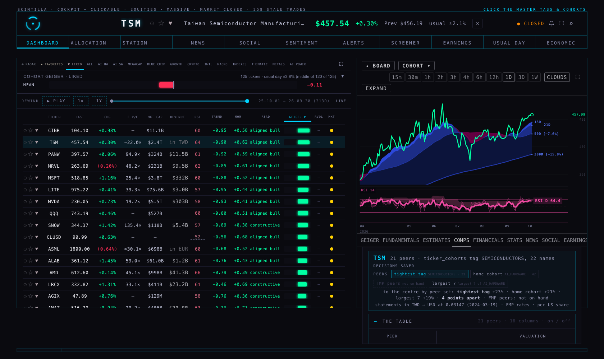
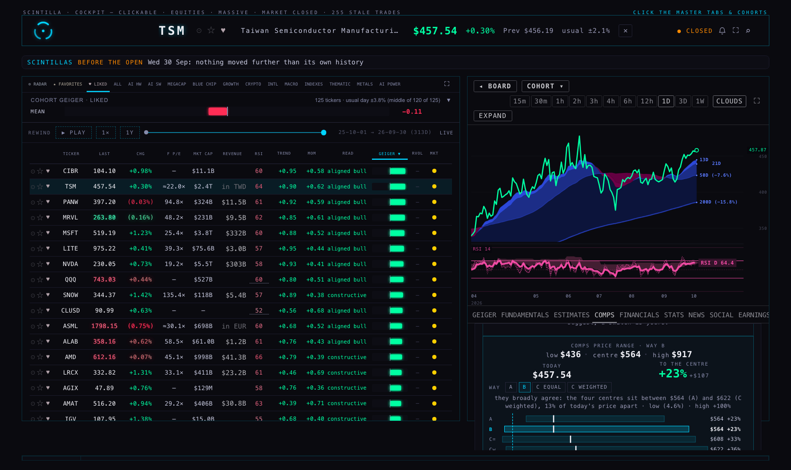
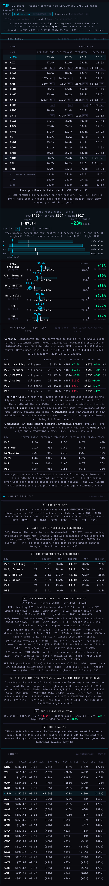
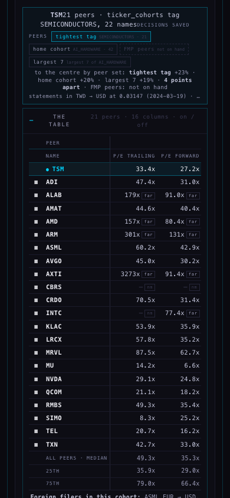
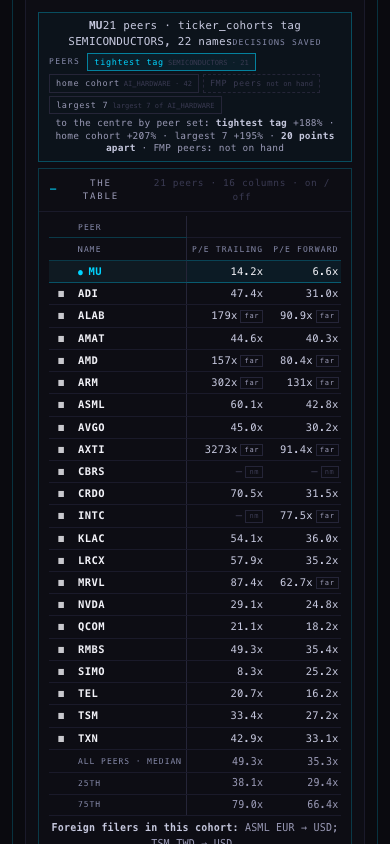

The COMPS tab now opens on the table, open: the full 16 columns, the company's row pinned on top in cyan, one row per peer with its switch, the quiet NM and FAR chips, the first two columns frozen so the names stay put while the rest scrolls sideways inside the table. Above it the peer set is a switch: the tightest tag (the default: SEMICONDUCTORS, 21 peers, for TSM, MU and NVDA), the board's home cohort (AI_HARDWARE, 42), FMP's own list (not on hand yet: migration and Fly job written), and the July demo's rule, the 7 largest of the home cohort by market value, shown because it differs. One line under the switch says how far the answer moves between sets. Then the conclusion card with the four ways as pictures beside the way switch: A, B, C equal and C weighted as four bands on one dollar axis, each with its centre tick and its upside, today's price as a dashed cyan rule. Then the six rows (the company as an overlay, one upside per row); the detail, the ladder and the cohort stay closed. The early prototypes were read; what they did and what is worth bringing back is below.
| Company | Today | Tightest tag (default) · 21 peers | Home cohort · 42 | Largest 7 of the home cohort | Spread between sets |
|---|---|---|---|---|---|
| TSM | $458 | +18% · $416 – $872, centre $538 | +14% · $353 – $852, centre $523 | +11% · $406 – $675, centre $505 | 7 points |
| MU | $1,054 | +186% · centre $3,009 | +204% · centre $3,206 | +190% · centre $3,055 | 18 points |
| NVDA | $230 | +56% · centre $358 | +67% · centre $384 | +59% · centre $365 | 11 points |
MU on 29 Sep read +93% on SEMICONDUCTORS against +205% on the home cohort. Today the tight set reads +186%: MU's trailing EPS jumped from $44 to $74 on its 30 Sep report, its P/E fell to 14x against a 50x-plus median, and every set now says the same large number. The spread between sets is 18 points, not 112, and the card says so.
TSM's four bands on the tight set: A $538 +18% · B $538 +18% · C equal $573 +25% · C weighted $584 +28%, drawn as four bands on one axis with today's $458 as the dashed rule; the line says "they broadly agree: the four centres sit between $538 (A) and $584 (C weighted), 28% of today's price apart". Switching to the home cohort moves the picture to $523 / $523 / $576 / $587.
The table on top for TSM on the tight set: 21 peers, 16 columns, 25 FAR chips and 5 NM chips (the loss-makers' blanks), TSM pinned: 35.1x · 28.6x · 24.1x · 17.3x · 17.8x · 0.93x · +31% · +35% · +31% · 64% · 56% · 27% · −0.6x · 34% · 24% · $0.87. The ticker column stays at the left edge while the table scrolls (measured: sticky, 26 px from the edge after a 420 px scroll).
FMP_CAPABILITY_DEMO.html (24 Jul 2026, 154 KB). A one-page demo of every FMP endpoint, with a comps engine at the top: the peer set was the other members of its primary cohort, largest-by-market-cap first, capped for table readabilityat 7 (the cohort from
ticker_cohorts.cohort, then is_primary, re-derived on every ticker switch, nothing hard-coded). Every multiple was computed client-side from fundamentals, balance_history and fundamentals_history: P/E, EV/EBITDA, P/S, P/B, PEG (P/E over revenue CAGR), gross and net margin, D/E, beta, dividend yield. A football field priced the company at the peers' min, median and max of each multiple (implied price = today's price × peer multiple ÷ own multiple) after a crude outlier clean (peers outside 0.35× to 2.5× of the median dropped). A VALUE score (the average percentile rank on the five valuation multiples, cheap = high) and a QUALITY score (margins, CAGR, leverage) gave two numbers out of 100 and a verdict per metric (cheap / mid / expensive by rank)._ALLOC_DEPLOY/analytics.html (10 Aug, "SCINTILLA analytics layer"). Not a comps table with picks: a database-reads-only proof page (sector rankings, cohort Geiger roll-up, value layer, DCF vs price, sector comps as trailing P/E vs the sector median over the loaded universe, operator weights). Its PICKS are in _ALLOC_DEPLOY/index.html, the deployed allocation engine.ALLOCATION_MODULE.html (10 Aug, the allocation engine). This is the comps table with "manipulating a little bit with a template" Alan remembers: the universe from ticker_cohorts and hub_favorites, the figures from the comps-feed edge function (fundamentals, ratios_history, analyst_estimates), a suggested list (the three coldest Geigers per sleeve) plus any name the operator added to COMPARE, eleven columns (market cap, Geiger, P/E, forward P/E, P/S, P/B, revenue growth, gross and net margin, D/E, dividend), ✕ drop / ↺ restore per row (the row stays, greyed, out of the medians; session-only, a reload restores everything), cells coloured green or orange against the peer median by the column's direction, median and mean rows under the table, and a PICK button per row that fed the names into the TARGET MIX donut, capped by a hard cap on total names. Picks were kept in localStorage.EQUITY_DESK_TEMPLATE.html and EQUITY_PROPOSAL_PROTOCOL.html (23 Jun). The template is a one-page executive summary per ticker with placeholders ({{TICKER}}, {{PEERS}}, {{P1}}, {{P2}}, {{BENCH_ROWS}}, {{BENCH_BARS}}): eight blocks — snapshot, verdict, fundamental lens (vs own range), pure benchmark (the ticker against two named peers, metric by metric, with bars), technical lens, the ladder (buy and sell rungs), intel, provenance. The protocol: pull everything we have for a favourite, print the summary, propose a laddered DCA plan; the pilot was GOOGL benchmarked against MSFT and META, bullish bias, low drama, volume-aware, verdicts logged for training. So the "template" was a hand-picked two-peer benchmark inside a fixed one-page summary, not a rule.
Worth bringing back. (1) The largest-N-by-market-cap rule: it differs from every other set, so it is on the switch as the fourth set. (2) The drop / restore per row with the medians recomputed is exactly today's on/off switch; the demo's version was session-only, ours is saved. (3) Cells coloured against the peer median by direction (cheaper, faster, keeps more) would make the table read at a glance; a small next step. (4) The VALUE and QUALITY scores (percentile ranks over the comps table) are a natural feed for the knockout, beside the Geiger. (5) The two-peer pure benchmark of the template is a special case of the switch (a hand-picked set); a "my set" option can carry it. Not worth bringing back: the 0.35×–2.5× outlier clean (a hidden rule; the flags do this in the open) and the implied price as price × peer ÷ own (the ladder prices from the company's own figures, which is the same thing stated honestly).





What I saw. The table is the first thing under the switch, open, with the company's cyan row on top and the switches and chips in place; scrolling it sideways keeps the ticker column at the left edge. The four bands sit to the right of the range and the way switch, the chosen way brighter, today's price a dashed cyan rule through all four, each band's centre and upside on its right. Switching the set re-reads the peers, and the table, the card, the bands and the rows all change together; the moves line fills in as the other sets are read. No page error, no chart API failure, zero writes in any run.
sets.mjs. Tightest = the smallest tag in ticker_cohorts that is not a size bucket (MEGA_CAP, MEGACAP, LARGE_CAP, MID_CAP, SMALL_CAP, BLUE_CHIP, INDEXES, MACRO) and holds at least five names; home = tickers.cohort; FMP = public.fmp_peers when it exists (migration 20261001_fmp_peers.sql + rollback, job scripts/fmp-peers-sync.mjs, FMP v4 stock_peers); largest 7 = the home cohort's members ranked by market value from the same read.filer_currency and fx_rates exist now but held no rows at 09:20 ET, so the named stand-ins still apply).tests/comps-table-first.test.mjs (7) on the dated set fixtures sets-TSM/MU/NVDA-2026-10-01.json.20261001_fmp_peers.sql, _ROLLBACK.sql, scripts/fmp-peers-sync.mjs.fmp_peers and run the job so FMP's list becomes a live choice on the switch. Recommendation: yes, with the currency job it is the same one-off machine.